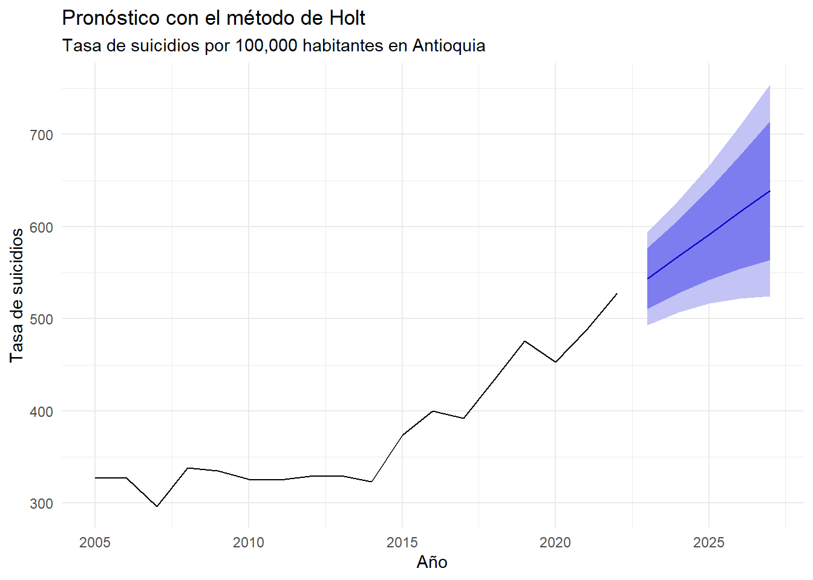

Capítulo 4 Modelado con Holt Winters y Suavizante
4.1 Metodologia de Holt Winters
El análisis de series temporales es una técnica poderosa en la ciencia de datos que permite descomponer datos históricos en tendencia, estacionalidad y ruido aleatorio, con el fin de predecir el comportamiento futuro de una variable. En el contexto de salud pública, modelar y pronosticar la tasa de suicidios es fundamental para diseñar políticas de prevención y respuesta oportuna.
El método de Holt-Winters (también llamado suavizamiento exponencial triple) es especialmente útil cuando una serie muestra tanto tendencia como estacionalidad, aspectos frecuentes en datos reales como los de mortalidad o salud mental. El modelo se estructura en torno a tres componentes:
Nivel (valor base)
Tendencia (incremento o decremento)
Estacionalidad (comportamiento cíclico)
Características de los datos
La serie temporal usada representa la tasa anual de suicidios por 100.000 habitantes en Antioquia desde 2005 hasta 2022. Se trata de una serie anual (frecuencia 1), por lo cual no se espera una estacionalidad periódica evidente, aunque sí se observa una tendencia creciente a partir de 2014.
Por esta razón, se aplica el método Holt (sin componente estacional), una variante del modelo de Holt-Winters que ajusta nivel y tendencia, pero no estacionalidad.
# Aplicar método Holt (sin estacionalidad)
modelo_holt <- holt(ts_suicidios, h = 5) # Pronóstico a 5 años
# Graficar resultados
autoplot(modelo_holt) +
labs(title = "Pronóstico con el método de Holt",
subtitle = "Tasa de suicidios por 100,000 habitantes en Antioquia",
y = "Tasa de suicidios", x = "Año") +
theme_minimal()
En este análisis, aplicamos el modelo de Holt a la serie de tiempo anual de la tasa de suicidios por 100.000 habitantes en Antioquia desde 2005 hasta 2022. Como se observa en el gráfico, existe una tendencia creciente notable a partir de 2015, lo cual justifica plenamente el uso de esta metodología.
La gráfica muestra:
La línea negra: evolución histórica de la tasa.
La línea azul: pronóstico para los próximos cinco años (2023–2027).
Las áreas sombreadas: intervalos de confianza, que permiten visualizar la incertidumbre en los valores proyectados.
## ME RMSE MAE MPE MAPE MASE
## Training set 6.256508 22.78625 17.07406 1.475734 4.447111 0.7908963
## ACF1
## Training set -0.002604474El MAPE de 4.45% indica que el modelo tiene muy buena precisión para pronosticar la tasa de suicidios, siendo este valor aceptable para aplicaciones sociales.
El MASE < 1 significa que el modelo de Holt supera a un modelo ingenuo (que simplemente usaría el último valor observado como predicción).
La autocorrelación casi nula en los residuos sugiere que no queda estructura sin modelar, lo cual respalda la validez del modelo.